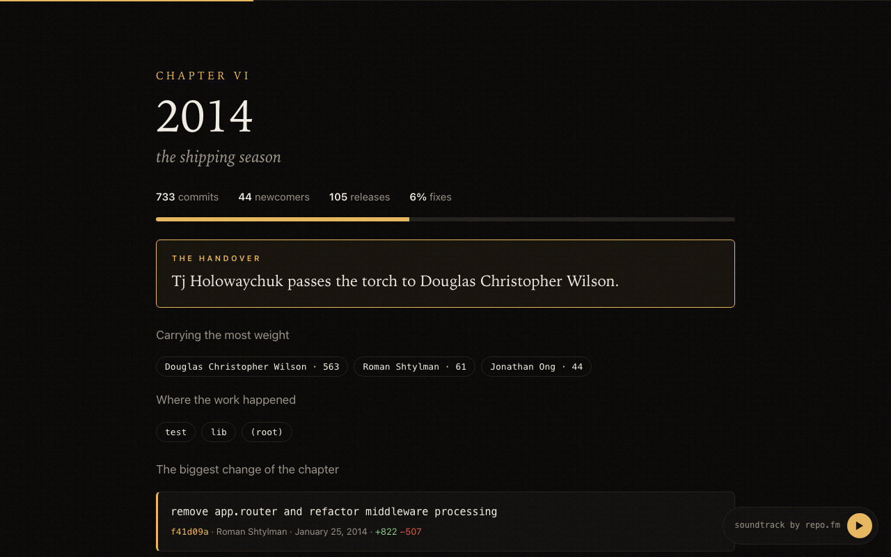

One command turns any git history into a cinematic film you can scroll: the founding, the handovers, the darkest week, the longest silence, the cast, the credits. The soundtrack is played from its commits.
cd your-project npx github:fixcoreai-cloud/repo.film --open
